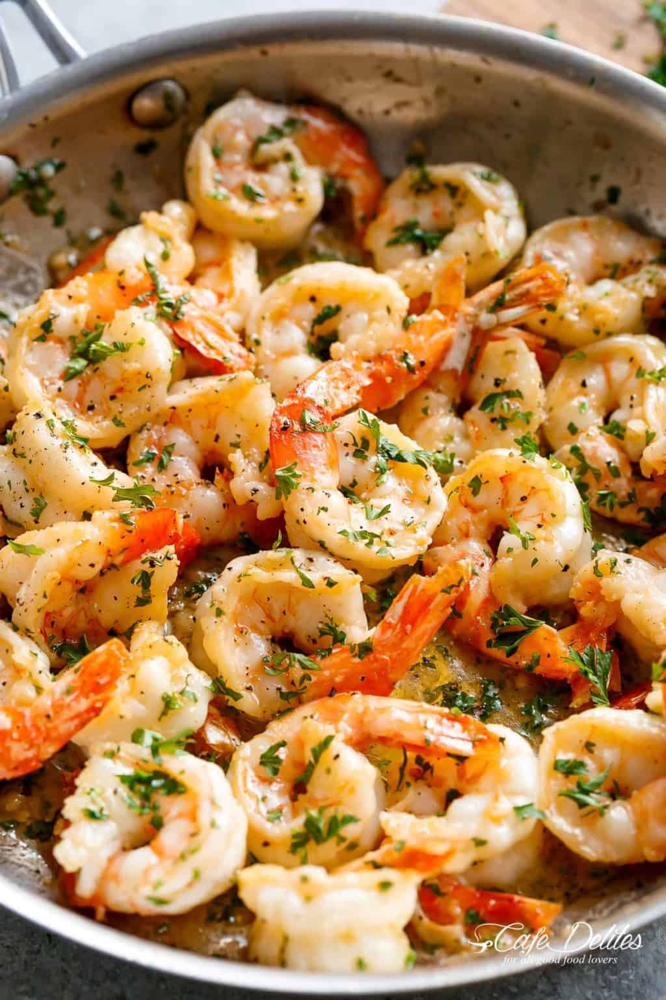

Home
Shrimp Scampi

Delicious shrimp scampi recipe
This recipe was inspired from my wife, who showed me this amazing dish some
time ago. It is simple but flavorful!
Ingredients
- 2 tablespoons olive oil
- 4 tablespoons butter
- 4-5 cloves garlic large, minced
- 1 1/4 pounds shrimp, shelled with tails on or off
- 1 pinch salt to taste
- 1 pinch cracked pepper to taste
- 1/4 cup dry white wine or broth
- 1/2 teaspoon red pepper flakes - optional
- 2 tablespoons lemon juice
- 1/4 cup fresh parlsey chopped